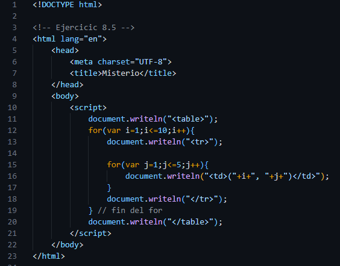

Ejercicios
| Capítulo VIII
Miguel Conde Luis | 197O01086
8.5
Ejercicio | ¿Qué es lo que hace el siguiente programa?

>>
- Debe imprir una matriz de números, de manera que se muestre el primer numero como el valor de la fila y el segundo como el valor de la columna.